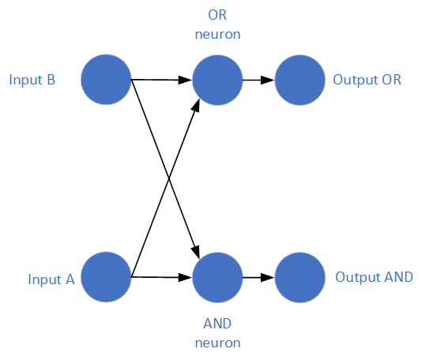
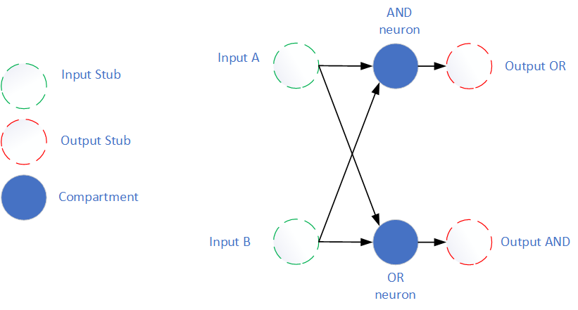
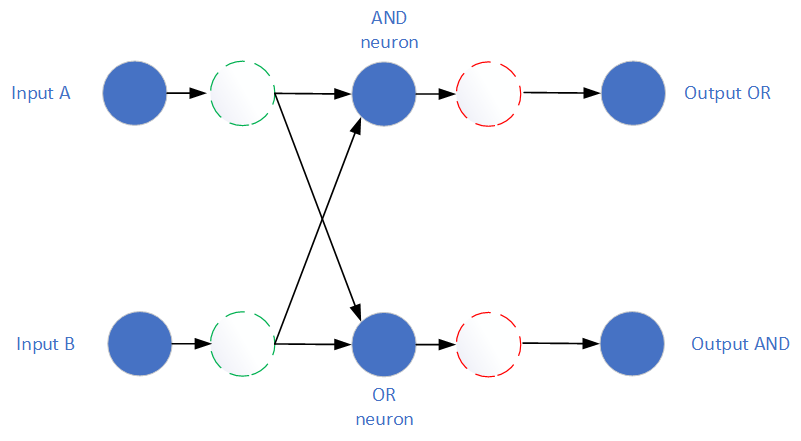

[1]:
# INTEL CORPORATION CONFIDENTIAL AND PROPRIETARY
#
# Copyright © 2019-2021 Intel Corporation.
#
# This software and the related documents are Intel copyrighted
# materials, and your use of them is governed by the express
# license under which they were provided to you (License). Unless
# the License provides otherwise, you may not use, modify, copy,
# publish, distribute, disclose or transmit this software or the
# related documents without Intel's prior written permission.
#
# This software and the related documents are provided as is, with
# no express or implied warranties, other than those that are
# expressly stated in the License.
[2]:
import nxsdk.api.n2a as nx
import matplotlib.pyplot as plt
import numpy as np
21. Stubs and NetModules¶
This tutorial demonstrates how to use Stubs to create partial connections and how these Stubs can be used as the inputs and outputs for NetModules.
Imagine a simple use case in which we want to create a “NetModule” for others to use. This NetModule can form part of a larger network, but we want to be able to specify the NetModule before having created the larger network.
As an example, let’s consider a simple use case in which we have two input neurons, and we want to compute the logical OR and logical AND of their spikes. The network would look something like Figure 1 below.
Figure 1. 
This is a fairly trivial network to create. We could do it like this:
21.1. Full Specification without netmodules or stubs¶
21.1.1. Define Compartments¶
[3]:
def makeInputCompartments(net):
"""Creates the leftmost compartments in Figure 1"""
# A prototype that spikes every time it receives an input spike and decays instantly
inputProto = nx.CompartmentPrototype(vThMant=1,
compartmentVoltageDecay=4095,
compartmentCurrentDecay=4095,
functionalState=nx.COMPARTMENT_FUNCTIONAL_STATE.IDLE)
compA = net.createCompartment(prototype=inputProto)
compB = net.createCompartment(prototype=inputProto)
return compA, compB
def makeOutputCompartments(net):
"""Creates the rightmost compartments in Figure 1"""
# We'll make this the same as the input neurons... since we don't know how this netmodule
# will be used, we don't really know the properties of the compartments it will connect to
outputProto = nx.CompartmentPrototype(vThMant=1,
compartmentVoltageDecay=4095,
compartmentCurrentDecay=4095,
functionalState=nx.COMPARTMENT_FUNCTIONAL_STATE.IDLE)
compAndOut = net.createCompartment(prototype=outputProto)
compOrOut = net.createCompartment(prototype=outputProto)
return compAndOut, compOrOut
[4]:
net = nx.NxNet()
compA, compB = makeInputCompartments(net)
compAndOut, compOrOut = makeOutputCompartments(net)
# AND and OR prototype neurons
orProto = nx.CompartmentPrototype(vThMant=5,
compartmentVoltageDecay=4095,
compartmentCurrentDecay=4095,
functionalState=nx.COMPARTMENT_FUNCTIONAL_STATE.IDLE)
andProto = nx.CompartmentPrototype(vThMant=15,
compartmentVoltageDecay=4095,
compartmentCurrentDecay=4095,
functionalState=nx.COMPARTMENT_FUNCTIONAL_STATE.IDLE)
compAnd = net.createCompartment(prototype=andProto)
compOr = net.createCompartment(prototype=orProto)
21.1.2. Define Connections¶
[5]:
connProto = nx.ConnectionPrototype(weight=10)
# input connections
compA.connect(compAnd, prototype=connProto)
compA.connect(compOr, prototype=connProto)
compB.connect(compAnd, prototype=connProto)
compB.connect(compOr, prototype=connProto)
# output connections
compAnd.connect(compAndOut, prototype=connProto)
compOr.connect(compOrOut, prototype=connProto)
[5]:
<nxsdk.net.nodes.connections.ConnectionCC at 0x7f80770a2ba8>
21.1.3. Stimulate and Run¶
We’ll re-use this function a few times in the tutorial after constructing the network in different ways.
[6]:
def stimulateAndRun(inputA, inputB, outputAnd, outputOr, net):
"""Creates spike gens, probes, and runs the network"""
# Create Spike Generators
spikeGenA = net.createSpikeGenProcess(numPorts = 1)
spikeGenB = net.createSpikeGenProcess(numPorts = 1)
# connect spike gens to the inputs
spikeGenA.connect(inputA, prototype=connProto)
spikeGenB.connect(inputB, prototype=connProto)
# Add spikes
spikesA = [10,20]
spikeGenA.addSpikes(spikeInputPortNodeIds = 0, spikeTimes = spikesA)
spikesB = [10,30]
spikeGenB.addSpikes(spikeInputPortNodeIds = 0, spikeTimes = spikesB)
# Probe the outputs
spikesAnd = outputAnd.probe(nx.ProbeParameter.SPIKE)[0]
spikesOr = outputOr.probe(nx.ProbeParameter.SPIKE)[0]
# Run
net.run(100)
net.disconnect()
print('A spike times: ' + str(spikesA))
print('B spike times: ' + str(spikesB))
print('AND spike times: ' + str(np.where(spikesAnd.data)))
print('OR spike times: ' + str(np.where(spikesOr.data)))
You should see the AND and OR compartments spiking 2 timesteps after the inputs
[7]:
stimulateAndRun(compA, compB, compAndOut, compOrOut, net)
/home/gorchard/nxsdk-nxsdk/nxsdk/graph/nxinputgen/../../snips/
INFO:DRV: SLURM is being run in background
INFO:DRV: Connecting to 134.134.68.81:33923
INFO:DRV: Host server up..............Done 0.16s
INFO:DRV: Encoding axons/synapses.....Done 1.74ms
INFO:DRV: Compiling snips.............Done 0.20s
INFO:DRV: Booting up..................Done 2.60s
INFO:DRV: Encoding probes.............Done 0.12ms
INFO:DRV: Configuring registers.......Done 3.23ms
INFO:DRV: Transferring spikes.........Done 1.32ms
INFO:DRV: Transferring probes.........Done 2.66ms
INFO:DRV: Executing...................Done 5.87ms
INFO:DRV: Processing timeseries.......Done 1.69ms
INFO:DRV: Executor: 100 timesteps.........Done 3.00s
A spike times: [10, 20]
B spike times: [10, 30]
AND spike times: (array([12]),)
OR spike times: (array([12, 22, 32]),)
21.2. With Stubs¶
Now imagine we intend for this module to be used in a larger network. Ideally we would just define the AND and OR neurons and their input connection properties. This is where Stubs come in. Stubs can be used as placeholders for compartments which are not yet specified.
Figure 2 below shows a module which uses stubs for its input and output. We don’t want the user to have to manually connect the input to both the AND and OR compartments and specify the connection properties, so we make a stub and specify the properties there.
Figure 2. 
A user can then add their own compartments and connect to from the stubs as shown in Figure 3 below. When this network is compiled, the network will collapse to become equivalent to Figure 1 at the very beginning of this tutorial.
Figure 3. 
21.2.1. Important Points¶
A stub can have only one source. If you try to connect from multiple compartments to the same stub, NxNet will throw an error to tell you.
However, stubs can connect to multiple compartments, or an output stub can connect to multiple input stubs.
Connections to a stub have no properties. All the synaptic properties are defined in the connection between an input stub and any compartments it connects to.
Input stubs can only connect to compartments.
Output stubs can connect to either input stubs, or compartments.
Stubs can be used as groups, much like other NxNet primitives.
Example use. ### Define the AND and OR compartments and stubs We’ll use the same protoypes we defined before. After this block we’ll have a network with stubs as shown in Figure 2.
[8]:
net = nx.NxNet()
inputA = net.createInputStub()
inputB = net.createInputStub()
compAnd = net.createCompartment(prototype=andProto)
compOr = net.createCompartment(prototype=orProto)
inputA.connect(compAnd, prototype=connProto)
inputA.connect(compOr, prototype=connProto)
inputB.connect(compAnd, prototype=connProto)
inputB.connect(compOr, prototype=connProto)
outputAnd = net.createOutputStub()
outputOr = net.createOutputStub()
# Note that these connections do not require a prototype
compAnd.connect(outputAnd)
compOr.connect(outputOr)
[8]:
<nxsdk.net.nodes.connections.ConnectionCS at 0x7f8075d31240>
21.2.2. Add input/output compartments and connect to stubs¶
After this block we’ll have the network as shown in Figure 3.
[9]:
compA, compB = makeInputCompartments(net)
compAndOut, compOrOut = makeOutputCompartments(net)
# Note that these connections do not require a prototype
compA.connect(inputA)
compB.connect(inputB)
# These connections go through a synapse, and therefore require a prototype
outputAnd.connect(compAndOut, prototype=connProto)
outputOr.connect(compOrOut, prototype=connProto)
21.2.3. Stimulate and Run¶
Same as before. The behaviour should be identical to the first network we ran.
[10]:
stimulateAndRun(compA, compB, compAndOut, compOrOut, net)
/home/gorchard/nxsdk-nxsdk/nxsdk/graph/nxinputgen/../../snips/
INFO:DRV: SLURM is being run in background
INFO:DRV: Connecting to 134.134.68.81:38553
INFO:DRV: Host server up..............Done 0.16s
INFO:DRV: Compiling snips.............Done 0.19s
INFO:DRV: Encoding axons/synapses.....Done 1.31ms
INFO:DRV: Encoding probes.............Done 0.40ms
INFO:DRV: Booting up..................Done 2.59s
INFO:DRV: Transferring spikes.........Done 1.73ms
INFO:DRV: Transferring probes.........Done 2.38ms
INFO:DRV: Configuring registers.......Done 3.33ms
INFO:DRV: Executing...................Done 5.64ms
INFO:DRV: Processing timeseries.......Done 2.07ms
INFO:DRV: Executor: 100 timesteps.........Done 2.98s
A spike times: [10, 20]
B spike times: [10, 30]
AND spike times: (array([12]),)
OR spike times: (array([12, 22, 32]),)
22. NetModules¶
Now imagine we want to package this code as a NetModule. A NetModule is a piece of code packaged in a manner that makes it easier for others to use. In particular, a NetModule inherits from the nx.NetModule class which has an “inputs” and “outputs” property.
The user of of a netmodule can easily determine the inputs and outputs by looking at the ‘inputs’ and ‘outputs’ properties. This will be shown in the example below.
When defining a netmodule, the super().__init__() function must be called. This will create an NxNet object for the netmodule. You can also optionally pass an NxNet object if you already have an NxNet object you would like to use.
Calling netmodule.getInputNames() will return a list of strings with the names of inputs to the module. You can connect to a particular name using source.connect(netmodule.inputs.name, …).
Similarly netmodule.getOutputNames() will return the output names, and they can be accessed using netmodule.outputs.name
If net is not passed to a netmodule, it will create it’s own, in which case you need to call net.addNet(netmodule.net) from the parent network. You can also just call net.addNet(netmodule).
netmodule.net will always return the NxNet object that the module belongs to.
The writer of the netmodule can add any helper functions they think are necessary. For example, setting up snips or sending data via snip channels, which would only be called long after the netmodule is created.
[11]:
class LogicGates(nx.NetModule):
def __init__(self, net=None):
super().__init__(net)
self._setupCompartments()
self._setupInputs()
self._setupOutputs()
self._makeConnections()
def _setupCompartments(self):
"""Creates the AND and OR compartments"""
orProto = andProto = nx.CompartmentPrototype(vThMant=5,
compartmentVoltageDecay=4095,
compartmentCurrentDecay=4095,
functionalState=nx.COMPARTMENT_FUNCTIONAL_STATE.IDLE)
andProto = nx.CompartmentPrototype(vThMant=15,
compartmentVoltageDecay=4095,
compartmentCurrentDecay=4095,
functionalState=nx.COMPARTMENT_FUNCTIONAL_STATE.IDLE)
self.compAnd = self.net.createCompartment(prototype=andProto)
self.compOr = self.net.createCompartment(prototype=orProto)
def _setupInputs(self):
"""Creates the Input Stubs and adds them as inputs"""
inputStubA = self.net.createInputStub()
inputStubB = self.net.createInputStub()
self.addInput(inputStubA, 'a')
self.addInput(inputStubB, 'b')
def _setupOutputs(self):
"""Creates the Output Stubs and adds them as outputs"""
outputStubAnd = self.net.createOutputStub()
outputStubOr = self.net.createOutputStub()
self.addOutput(outputStubAnd, 'andGate')
self.addOutput(outputStubOr, 'orGate')
def _makeConnections(self):
connProto = nx.ConnectionPrototype(weight=10)
self.inputs.a.connect(self.compAnd, prototype=connProto)
self.inputs.a.connect(self.compOr, prototype=connProto)
self.inputs.b.connect(self.compAnd, prototype=connProto)
self.inputs.b.connect(self.compOr, prototype=connProto)
self.compOr.connect(self.outputs.orGate)
self.compAnd.connect(self.outputs.andGate)
The netmodule we have written is just Figure 2 from above. We have used stubs as the inputs and outputs because it allows us to control the internal connectivity and connection properties, but in cases where this is not necessary, compartments and compartmentGroups can also directly be added as inputs and outputs. i.e. self.inputs.add(compartment, ‘compartmentName’)
[12]:
net = nx.NxNet()
myModule = LogicGates()
net.addNet(myModule)
# Determine which inputs and outputs this module has
print('Input names are: ' + str(myModule.getInputNames))
print('Output names are: ' + str(myModule.getOutputNames))
Input names are: ['b', 'a']
Output names are: ['orGate', 'andGate']
[13]:
# make the input and output compartments
compA, compB = makeInputCompartments(net)
compAndOut, compOrOut = makeOutputCompartments(net)
# connect them to the module
compA.connect(myModule.inputs.a)
compB.connect(myModule.inputs.b)
myModule.outputs.andGate.connect(compAndOut, prototype=connProto)
myModule.outputs.orGate.connect(compOrOut, prototype=connProto)
# Run the network as before
stimulateAndRun(compA, compB, compAndOut, compOrOut, net)
/home/gorchard/nxsdk-nxsdk/nxsdk/graph/nxinputgen/../../snips/
INFO:DRV: SLURM is being run in background
INFO:DRV: Connecting to 134.134.68.81:44961
INFO:DRV: Host server up..............Done 0.11s
INFO:DRV: Compiling snips.............Done 0.19s
INFO:DRV: Encoding axons/synapses.....Done 1.45ms
INFO:DRV: Encoding probes.............Done 0.11ms
INFO:DRV: Booting up..................Done 2.59s
INFO:DRV: Transferring probes.........Done 3.01ms
INFO:DRV: Configuring registers.......Done 3.32ms
INFO:DRV: Transferring spikes.........Done 1.61ms
INFO:DRV: Executing...................Done 5.74ms
INFO:DRV: Processing timeseries.......Done 1.38ms
INFO:DRV: Executor: 100 timesteps.........Done 2.93s
A spike times: [10, 20]
B spike times: [10, 30]
AND spike times: (array([12]),)
OR spike times: (array([12, 22, 32]),)